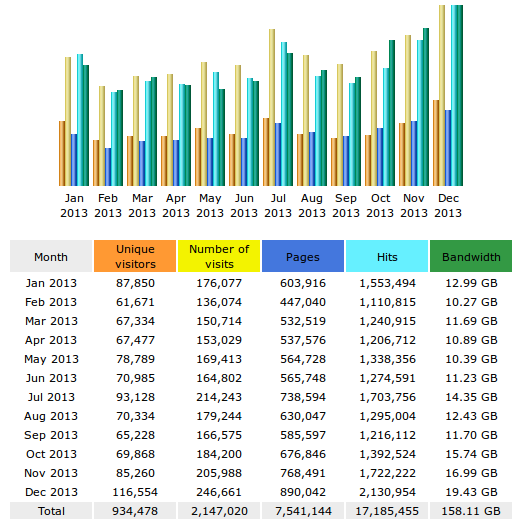

Two years ago I wrote a short summary of the visitor stats for this website during 2011. I skipped this in 2012, but here is a similar summary for 2013.
TL;DR: 2013 was the busiest year ever with 77K unique visitors per month on overage (compared to 66K in 2012 and 56K in 2011).
Monthly averages: 178,900 visits a month by 77,800 unique visitors, who viewed 628,400 pages. Once again the USA accounted for a large chunk of the traffic, with Germany, China and France lagging behind.
In addition to search engines (mostly Google), most visitors came through Reddit, StackOverflow, and pygame.org. The most popular search keyphrases were "python multiprocessing", "python destructor", and "book review of around the world in 80 days", though these are fairly widely distributed (the highest occupies only 0.7% of the overall pie).
The five most viewed pages this year (counting only direct hits, not through the main page) were:
- Intel i7 loop performance anomaly
- Code sample - socket client thread in Python
- How statically linked programs run on Linux
- Understanding your own code
- Python - parallelizing CPU-bound tasks with multiprocessing
Finally, OS & browser distribution: 46% visitors were on Windows, with Linux lagging behind with 22%, followed by Mac with 18%. In browsers, Chrome is the big winner with 37%, followed by Firefox with 28%.
Thanks once again to all the dedicated readers of my blog :-)